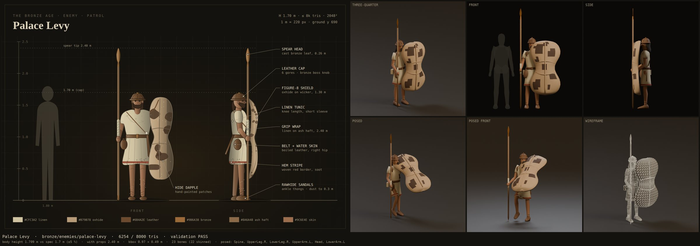
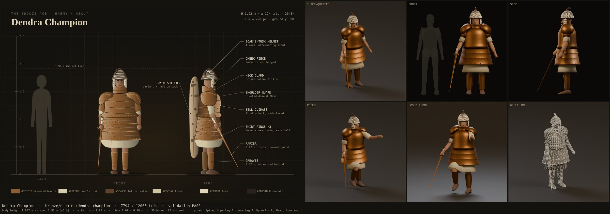
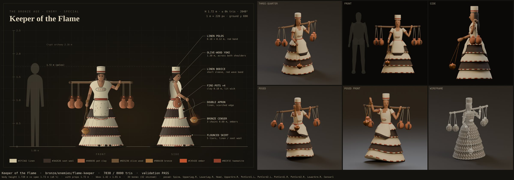
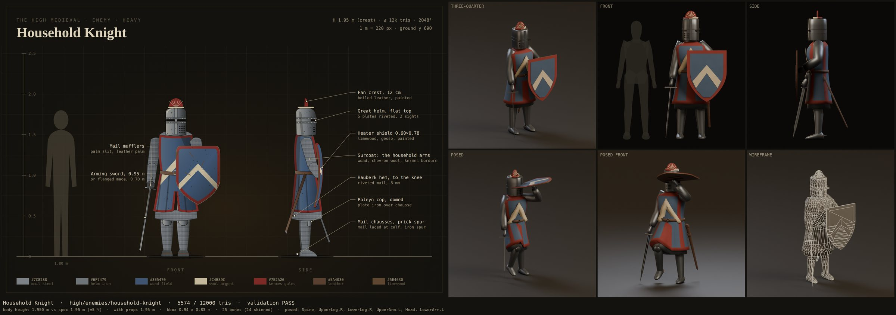
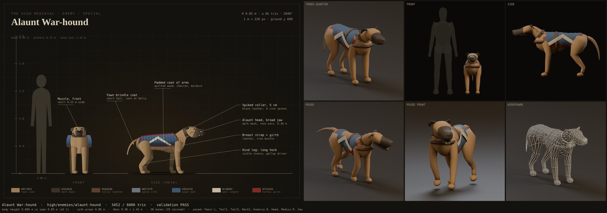
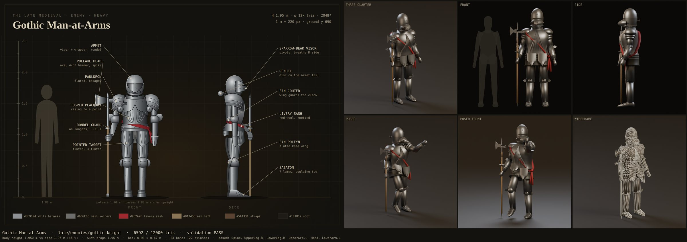
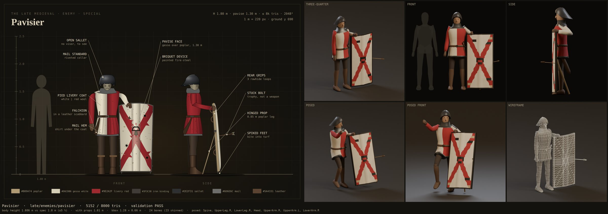
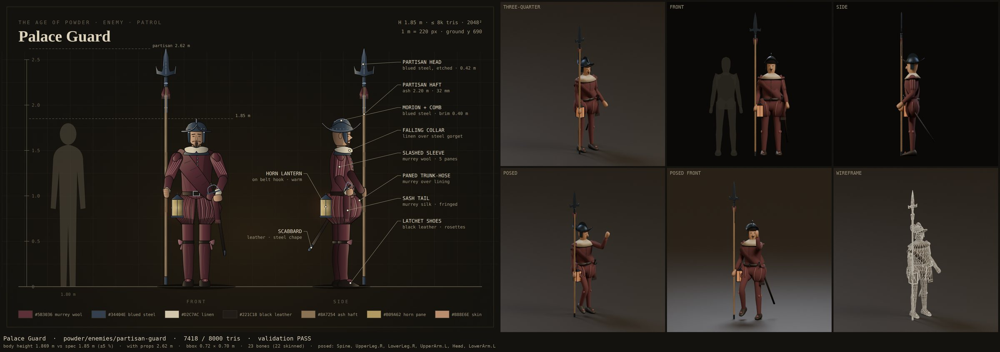
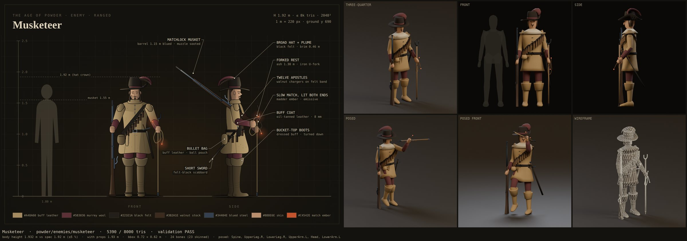
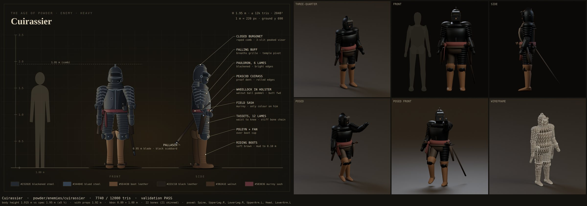

The household, in motion
Sixteen defenders stand modelled and rigged. This is the plan for walking them into a raid, and then teaching them to move: to patrol, turn at a noise, swing, reload, fall asleep under Somnus, and fall down.
Everything goes through the same audit as the art
The models were checked by setting each render beside its concept. The engine and the animations get the same treatment. Each clip gets a review sheet beside its enemy's concept, and each in-engine enemy gets a Unity screenshot sheet beside its concept.
All 16 are imported: Unity has written their .meta files. They import as Generic rigs with no avatar, and no prefab, roster entry or spawn uses them yet.
A guard is one networked CastleGuard with synced state and health on a NavMesh agent. The Lair's chosen Age does not reach the guard planner. Nothing animates any enemy.
Attacks run only on the host. Other players see the projectile or the damage, but never the swing. That signal has to be replicated before any attack animation can play for everyone.
Four decisions before any work starts
The ten EnemyForge enemies
Recommended The art-bible set replaces the household four (Watchman, Man-at-Arms, Sergeant, War-hound). The supernatural five stay in the Crypt until the bestiary question is settled. Alternatives: keep all 26, or retire all ten now.
Enemies only in their own Age
Recommended Yes. This needs the Age choice to reach the castle, and the era-rooms work needs the same wiring, so build it once for both. Alternative: mix all four Ages until that lands.
Where the motion comes from
Recommended Keyframed in Blender by code ("AnimForge"): stylised to match the art, runs end to end here, reproducible and reviewable. Alternatives: a motion-capture library (natural locomotion, but downloaded by hand with an account, the licence needs checking, and there are almost no crossbow or pavise moves), or a hybrid of library locomotion and AnimForge weapon moves.
Death, sleep and being thrown
Recommended Animated clips for sleep, stun and knock-down. A ragdoll for thrown or killed guards; the downed-player carry already has the switch to copy. Plus: in-place clips (the NavMesh moves the guard), 1024 textures for now, and LODs and spring bones after the first playtest.
Into the engine
Import settings owned by code
An import script sets Humanoid avatars for the fifteen humans (their bones are already Unity-Humanoid names, mapped explicitly) and a Generic rig for the hound. URP Lit materials are rebuilt from the baked maps, with emission restored to its HDR strength. Nothing is set by hand in the Inspector.
Prefabs from the art bible's own numbers
A forge reads the JSON and the ArtForge manifest: height, zones and role. It builds prefab variants with a collider, a NavMesh agent sized to fit the archways, role tuning (patrol, ranged, heavy, special), prop sockets, and a small warm light on every lantern, match and fuse.
Roster entries
Zones and weights come from each enemy's spec. Role sets the weight: patrol 10, ranged 7, heavy 4, special 3.
The Age reaches the guards
Roster entries get an Age. The planner filters by Age first; if that leaves nothing, it falls back to zone only and logs a warning, never silently. The pass-through is built once, shared with the era-rooms work.
In a raid, networked
Guards spawn through the existing networked path. One new replicated attack signal lets every player see every swing.
Teaching them to move
The specs ask for 177 clips. Most are the same motion on a different body, so they're authored once and retargeted through Unity's Humanoid system. That leaves about eighty to author. Most "one-off" clips, like idle_lantern or walk_burdened, turn out to be a base motion plus that enemy's way of holding its gear. That becomes one upper-body carry pose per enemy (16) instead of dozens of separate clips.
Clip table, on paper first
Every clip's layer, loop flag, length and events. The events are footsteps (so guards make noise in the acoustics system), the attack-hit frame, projectile release, and a prop dropping. The matrix below is the first draft.
AnimForge, in Blender
A pose library on the shared human rig. Clips are timed pose keys with anticipation and overshoot; locomotion is a gait matched to the agent speed, so feet don't slide. Weapon families carry IK targets, so two-handed weapons stay in both hands after retargeting. The hound's clips are made on its own rig.
Import
The same import script sets Humanoid or Generic, loop flags, in-place root motion and events, all from the clip table.
One animator, sixteen overrides
One base controller with four parts: locomotion blend, an upper-body action layer, additive hits, and full-body states (sleep, levitate, stagger, duck, death). The forge generates one override controller per enemy for its weapon and signature moves. The hound gets its own.
Driven by the game
A driver reads the synced guard state, speed from movement, and the replicated attack signal, and only sets animator values. Animation events feed footstep noise and projectile timing. Death and being thrown switch to the ragdoll.
Suggested order: prove the whole chain on one enemy first, the Lantern Warden: base clips plus the polearm family, then import, animator and driver. Once he patrols and swings in a raid, fan out one Age at a time, in parallel, as with the models.
Every clip the specs ask for
Taken from each enemy's spec. The colour says how a clip gets made.
| Enemy | Clips | n |
|---|---|---|
 Palace LevyThe Bronze Age · patrol · polearm | idle_leaningpatrol_walkalert_turnshout_alarmguard_stancethrustshield_basharchway_duckstagger_hitdeath_fallflee_panic | 11 |
 Wall SlingerThe Bronze Age · ranged · sling Wall SlingerThe Bronze Age · ranged · sling | idle_scanpatrol_walkalert_turnreloadsling_windupsling_releasestrafe_leftretreat_runvault_parapethit_flinchdeath_fall | 11 |
 Dendra ChampionThe Bronze Age · heavy · sword & shield | idle_heavywalk_slowalert_turnrapier_lungerapier_cutshield_braceshrug_impactsideways_aisleheavy_staggerkneel_get_updeath_topple | 11 |
 Keeper of the FlameThe Bronze Age · special · throw | idle_tendprocession_walkalert_turnchant_alarmunhook_potthrow_potcenser_swingcrypt_duckretreat_walkhit_flinchdeath_fall | 11 |
 Lantern WardenThe High Medieval · patrol · polearm Lantern WardenThe High Medieval · patrol · polearm | idle_lanternwalk_roundalert_turnlantern_raise_searchcant_glaiveshout_alarmrun_to_noiseattack_glaive_thrustattack_glaive_sweephit_reactdeath_drop_lantern | 11 |
 Castle CrossbowmanThe High Medieval · ranged · crossbow Castle CrossbowmanThe High Medieval · ranged · crossbow | idle_readywalk_patrolalert_turnaim_holdshootreload_spanreload_interruptedstrafe_to_loopmelee_bow_butthit_reactdeath_forward | 11 |
 Household KnightThe High Medieval · heavy · sword & shield | idle_guardwake_slowwalk_heavyalert_turnadvance_shieldattack_overheadattack_shield_bashduck_doorstagger_heavyhelm_knocked_offdeath_kneel | 11 |
 Alaunt War-houndThe High Medieval · special · hound | sleep_curlwake_to_noisesniff_trackalert_pointbark_alarmgallopstairs_runlunge_biteworry_shakeyelp_hitdeath_fall | 11 |
 Sallet HalberdierThe Late Medieval · patrol · polearm Sallet HalberdierThe Late Medieval · patrol · polearm | idle_slopewalk_roundslope_halberd_archalert_turncall_partnersearch_pairrun_to_noiseattack_thrustattack_hookattack_chophit_reactdeath_fall | 12 |
 HandgunnerThe Late Medieval · ranged · long gun HandgunnerThe Late Medieval · ranged · long gun | idle_shoulderwalk_postalert_turnbrace_and_aimfirereloadcall_pavisierretreat_behind_paviseclubhit_reactdeath_fall | 11 |
 Gothic Man-at-ArmsThe Late Medieval · heavy · polearm | idle_standwalk_heavyalert_turn_slowvisor_raisechargeattack_spike_thrustattack_hammerattack_axe_sweepshrug_spellhit_react_heavystand_updeath_topple | 12 |
 PavisierThe Late Medieval · special · sword & shield | idle_shieldwalk_carryalert_turnplant_pavisecrouch_behindadvance_paviseshovedraw_falchionattack_falchionhit_reactdeath_fall | 11 |
 Palace GuardThe Age of Powder · patrol · polearm | idle_shoulderpatrol_walkraise_lanternalert_turnchallenge_shoutcharge_runthrustsweeparchway_tilthit_reactdeath_fall | 11 |
 MusketeerThe Age of Powder · ranged · long gun | idle_carrypatrol_walkalert_turnplant_restaimfire_volleyreloadclub_meleedraw_swordhit_reactdeath_fall | 11 |
 CuirassierThe Age of Powder · heavy · pistol | idle_heavypatrol_walkalert_turndraw_pistolpistol_firedraw_swordoverhead_cutshoulder_bargearchway_duckstagger_backdeath_fall | 11 |
 PetardierThe Age of Powder · special · throw PetardierThe Age of Powder · special · throw | idle_burdenedwalk_burdenedalert_turnplant_petardflee_runthrow_grenadocowerhit_reactself_detonatedeath_fall | 10 |